설비보전기사 (2022-03-05 기출문제)
1과목: 설비진단 및 계측
1. 진동이 완전한 1사이클을 하는 동안에 걸린 총 시간을 나타내는 용어는?
- 진동수
- 진동주기
- 각진동수
- 진동위상
(정답률: 83%)

2. 다음 중 진동측정기기의 측정값으로 널리 사용되는 것은?
- 실효값
- 편진폭
- 양진폭
- 산술 평균값
(정답률: 84%)
3. 석영과 같은 일부 크리스탈은 압력을 받으면 전위를 발생시키는데 이러한 효과를 나타내는 용어는?
- 열전 효과(Thermoelectric effect)
- 광전 효과(Photoelectric effect)
- 광기전력 효과(Photovoltaic effect)
- 압전 효과(Piezoelectric effect)
(정답률: 82%)
4. 외란이 가해진 후 계가 스스로 진동하고 있을 때 이 진동을 나타내는 용어는?
- 공진
- 강제 진동
- 고유 진동
- 자유 진동
(정답률: 71%)
5. 계측계에서 입력신호인 측정량이 시간적으로 변동할 때,출력신호인 계측기 지시 특성을 나타내는 것은?
- 부특성
- 정특성
- 동특성
- 변환특성
(정답률: 69%)
6. 진동 센서의 설치 위치에 대한 설명으로 적절하지 않은 것은?
- 회전축의 중심부에 설치한다.
- 레이디얼 베어링 작창부의 수직 방향에 설치한다.
- 레이디얼 베어링 장착부의 수평 방향에 설치한다.
- 스러스트 베어링 장착부의 축 방향에 설치한다.
(정답률: 75%)
7. 진동 차단기의 기본 요구조건으로 틀린 것은?
- 걸어준 하중을 충분히 견딜 수 있어야 한다.
- 온도,습도,화학적 변화등에 의해 견딜 수 있어야 한다.
- 진동보호 대상체보다 강성이 충분히 커서 차단능력이 있어야 한다.
- 차단하려는 진동의 최저 주파수보다 작은 고유 진동수를 가져야 한다.
(정답률: 61%)
8. 가속도 센서의 고정 방법 중 사용할 수 있는 주파수 영역이 넓고 정확도 및 장기적 안정성이 좋으며 먼지, 습기, 온도의 영향이 적은 것은?
- 나사 고정
- 밀랍 고정
- 마그네틱 고정
- 에폭시 시멘트 고정
(정답률: 75%)
9. 초음파식 레벨계의 특성으로 틀린 것은?
- 비첩촉식 측정이 가능하다.
- 소형 경량이고 설치 및 운전이 간단하다.
- 가동부가 없고, 점검 및 보수가 가능하다.
- 온도에 민감하지 않아 온도 보정을 필요로 하지 않는다.
(정답률: 67%)
10. 산업분야에서 일반적으로 널리 사용하는 압력으로 대기압력을 기준으로 하는 것은?
- 차압
- 상대 압력
- 절대 압력
- 게이지 압력
(정답률: 66%)
11. 음파가 한 매질에서 다른 매질로 통과할 때 구부러지는 현상은?
- 음의 굴절
- 음의 회절
- 맥놀이(beat)
- 도플러(Doppler)효과
(정답률: 76%)
12. 다음 필터 중 저역을 통과시키며 특정 주파수 이상은 감쇠(차단)시켜주는 필터로 가장 적합한 것은?
- 로우패스 필터
- 밴드패스 필터
- 하이패스 필터
- 주파수패스 필터
(정답률: 72%)
13. 일반적인 터빈식 유량계의 특징으로 틀린 것은?
- 내구력이 있고 수리가 용이하다.
- 용적식 유량계보다 압력 손실이 작다.
- 용적식 유량계에 비해서 대형이며, 구조가 복잡하고 비용이 많이 소요된다.
- 고온·저온·고압의 액체나 식품·약품등의 특수 유체에 사용된다.
(정답률: 64%)
14. 소음의 물리적 성질에 대한 설명으로 틀린 것은?
- 파동은 매질의 변형운동으로 이루어지는 에너지 전달이다.
- 파면은 파동의 위상이 같은 점들을 연결한 면이다.
- 음선은 음의 진행 방향을 나타내는 선으로 파면에 수평이다.
- 음파는 공기 등의 매질을 전파하는 소밀파(압력파)이다.
(정답률: 56%)
15. 검사 대상체의 내부와 외부의 압력 차를 이용하여 결함을 탐상하는 비파괴검사법은?
- 누설검사
- 와류탐상검사
- 침투탐상검사
- 초음파탐상검사
(정답률: 58%)
16. 다음 비파괴검사법 중 맞대기 용접부의 내부 기공을 검출하는데 가장 적합한 것은?
- 침투탐상검사
- 와류탐상검사
- 자분탐상검사
- 방사선투과검사
(정답률: 64%)
17. 진동 차단기 선택 시 유의사항으로 옳지 않은 것은?
- 강철스프링을 이용하는 경우에는 측면 안정성을 고려하여 직경이 큰 것이 안전하다.
- 하중이 크거나 정적변위가 5mm 이상인 경우 강철스프링의 사용이 바람직하다.
- 고무 제품은 측면으로 미끄러지는 하중에 적합하나 온도에 따라 강성이 변하므로 주의를 요한다.
- 파이버 글라스 패드의 강성은 주로 파이버의 질량과 모세관에 의하여 결정된다.
(정답률: 53%)
18. 발음원이 이동할 때 그 진행방향 쪽에서는 원래의 음보다는 고음으로, 진행 반대쪽에서는 저음으로 되는 현상은?
- 마스킹 효과
- 도플러 효과
- 음의 회절 효과
- 음의 반사 효과
(정답률: 71%)
19. 센서에서 입력된 신호를 전기적 신호로 변환하는 방법에 해당하지 않는 것은?
- 변조식 변환
- 전류식 변환
- 직동식 변환
- 펄스 신호식 변환
(정답률: 56%)
20. 코일간의 전자유도 현상을 이용한 것으로서 발신기와 수신기로 구성되어 있으며, 회전각도 변위를 전기신호로 변환하여 회전체를 검출하는 수신기는?
- 싱크로(synchro)
- 리졸버(resolver)
- 퍼텐쇼미터(potentiometer)
- 앱솔루트 인코더(absolute encoder)
(정답률: 59%)
2과목: 설비관리
21. 설비가 가동하여야 할 시간에 고장, 생산조정, 준비(set-up) 및 교체 또는 초기수율저하에 의해 얼마의 시간이 소실되느냐를 나타내는 지수는?
- 양품률
- 시간가동률
- 성능가동률
- 설비종합효율
(정답률: 64%)
22. 윤활유 오염도 측정법의 종류가 아닌 것은?
- 중량법
- 계수법
- SOAP법
- 오염지수법
(정답률: 60%)
23. 다음 중 윤활제를 형태에 따라 분류할 때 대분류가 가장 적절하게 구분되어진 것은?
- 광유, 합성유, 지방유
- 합성유, 그리스, 고체윤활제
- 윤활유, 그리스, 고체윤활제
- 내연기관용윤활유, 공업용윤활유, 기타윤활제
(정답률: 70%)
24. 그리스 중주제에 해당하는 것은?
- Na
- Pbo
- 흑연
- 피마자유
(정답률: 59%)
25. 점도기수를 구하는 식으로 옳은 것은?
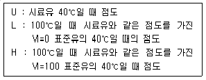
- 점도지수 = L-U/L-H × 100
- 점도지수 = L+U/L+H × 100
- 점도지수 = (L-U)×(L-H)×100
- 점도지수 = (L+U)×(L+H)×100
(정답률: 49%)
26. 설비관리 조직의 분업 방식 중 모든 기능을 전문부분에 책임지게 하고 그 부문을 다시 하부기능에 의해서 분업화 하는 방식은?
- 기능 분업
- 지역 분업
- 공정별 분업
- 전문기술 분업
(정답률: 51%)
27. 플러싱(flushing) 시기로 적절하지 않은 것은?
- 윤활유 보충시
- 기계장치의 신설 시
- 윤활계통의 검사 시
- 윤활장치의 분해보수 시
(정답률: 65%)
28. 그리스의 성질은 주도에 대한 설명으로 틀린 것은?
- 윤활유의 점도에 해당하는 것으로서 무르고 단단한 정도를 나타낸 값이다
- 미국 윤활그리스협회(NLGI)는 주도번호 000호부터 6호까지 9종류로 분류하고 있으며 000호는 액상, 6호는 고상이다.
- 주도는 기유 점도와는 독립된 성질이며, 오히려 증주에의 종류와 양에 관계가 있다.
- 주도와 기유점도는 온도와는 무관하며, 증주제가 같으면 내열성을 나타내는 적점은 주도가 바뀌어도 별로 변하지 않는다.
(정답률: 63%)
29. 부하가 많을 경우에 각 부하의 최대수요 전력의 합을 각 부하를 종합했을 때의 최대수요전력으로 나눈 것은?
- 부하율
- 부등률
- 수요율
- 설비 이용률
(정답률: 50%)
30. 기어용 윤활유의 필요 특성에 해당하지 않는 것은?
- 발포성
- 내하중성, 내마모성
- 열안정성, 산화 안정성
- 적정한 점도 유지 및 저온 유동성
(정답률: 71%)
31. 보전도 공학의 영역에서 설계기준개발, 보전개념개발, 보전기능개발, 보전도 할당 및 보전도 설계개선 등과 가장 관련성이 큰 것은?
- 보전도 계획
- 보전도 분석
- 보전도 설계
- 보전도 합리화
(정답률: 64%)
32. 생산공정에서 취급되는 재료,반제품 또는 완제품을 공정에 받아들이거나 공정 도중 또는 최종 작업단계에서 대상물의 작업 기준 합치여부를 조사하기 위해 사용되는 공구는?
- 주조
- 단조
- 검사구
- 치구부착구
(정답률: 71%)
33. 예방보전의 효과로 틀린 것은?
- 설비의 정확한 상태를 파악한다.
- 고장 원인의 정확한 파악이 가능하다.
- 보전 작업의 질적 향상 및 신속성을 가져온다
- 설비 갱신 기간의 연장에 의한 설비 투자액이 증가한다.
(정답률: 75%)
34. 목표를 설정할 때 이용되는 QC 수법으로 가장 거리가 먼 것은?
- 체크시트에 의한 방법
- 막대그래프에 의한 방법
- 히스토그램에 의한 방법
- 레이더 차트에 의한 방법
(정답률: 55%)
35. 보전성에 대한 설명 중 설계와 제작에 대한 특성을 나타낼 수 있는 확률로 옳지 않은 것은?
- 보전이 규정된 절차와 주어진 재료 등의 자원을 가지고 실행될 때 어떤 부품이나 시스템이 주어진 시간 내에서 지정된 상태를 유지 또는 회북할 수 있는 확률
- 설비가 적정기술을 가지고 있는 사람에 의해 규정된 절차에 따라 운전하고 있을 때 보전이 주어진 기간 내 주어진 횟수 이상으로 요구되지 않을 확률
- 설비가 규정된 절차에 따라 주어진 조건에서 운전 및 보전될 때 부품이나 설비의 운전상태가 주어진 안전사고 수준 이하로 되지 않을 확률
- 보전이 규정된 절차와 주어진 재료 등의 자원을 가지고 실행될 때 어떤 부품이나 시스템으로부터 생산된 생산량이 어느 불량률 이상 되지 않는 확률
(정답률: 49%)
36. 극압윤활을 위한 극압제로 사용하지 않는 것은?
- H
- Cl
- S
- P
(정답률: 59%)
37. 유체윤활에서 마찰저항을 결정하는 요소는?
- 마찰면의 재질
- 윤활제의 유성
- 유체의 점성저항
- 마찰면의 다듬질 정도
(정답률: 61%)
38. 복동형 왕복압축기의 운전부 윤활(외부윤활)에 대한 설명으로 틀린 것은?
- 산화 안정성이 좋아야 한다.
- 녹 발생을 적제할 수 있어야 한다.
- 터빈유를 사용하는 것이 바람직 하다.
- 지방유를 혼합한 윤활유를 사용하면 좋다.
(정답률: 61%)
39. 생산량이 많고 표준화되어 작업의 균형이 유지되며 재료의 흐림이 원활한 경우에 많이 이용되는 설비배치의 형태는?
- 갱 시스템
- 제품별 배치
- 기능별 배치
- 제품 고정형 배치
(정답률: 51%)
40. 수리공사에 대한 설명으로 틀린 것은?
- 일반보수공사는 조업상 요구에 의한 개량공사이다.
- 사후수리공사는 설비 검사를 하지 않은 생산설비의 수리이다.
- 돌발수리공사는 설비검사에 의해 계획하지 못했던 고장의 수리이다.
- 예방수리공사는 설비검사에 의해서 계획적으로 하는 수리이다.
(정답률: 45%)
3과목: 기계일반 및 기계보전
41. 나사체결에 관한 설명으로 옳지 않은 것은?
- 나사체결 전 볼트의 강도등급을 확인한다.
- 볼트 체결방법은 토크법,너트회전각법,가열법,장력법이 있다
- 토크법은 나사면의 마찰계수 불균형을 무시할 수 있다.
- 가장 큰 장력으로 조일 수 있는 적절한 체결방법은 텐셔너(장력법)를 이용하는 방법이다.
(정답률: 67%)
42. 두 축의 중심선이 어느 각도로 교차되고 그 사이의 각도가 운전 중 다소 변하여도 자유로이 운동을 전달할 수 있는 축이음은?
- 머프 커플링(muff coupling)
- 올덤 커플링(oldham coupling)
- 클램프 커플링(clamp coupling)
- 유니버설 커플링(universal coupling)
(정답률: 69%)
43. 기계제도 중 기어의 도시 방법에 대한 설명으로 옳지 않은 것은?
- 잇봉우리원은 굵은 실선으로 표시한다.
- 피치원은 가는 1점 쇄선으로 표시한다.
- 이골원은 가는 2점 쇄선으로 표시한다.
- 잇줄 방향은 통상 3개의 가는 실선으로 표시한다.
(정답률: 52%)
44. 비교 측정에 사용되는 측정기는?
- 측장기
- 마이크로미터
- 다이얼게이지
- 버니어 캘리퍼스
(정답률: 58%)
45. 안전 점검표(Check list)에 포함되어야 할 사항이 아닌 것은?
- 점검 대상
- 판정 기준
- 점검 방법
- 점검자 경력
(정답률: 75%)
46. 목재가공용 둥근톱기계의 방호장치 중 반발예방장치의 구성요소에 해당하지 않는 것은?
- 스토퍼
- 분할 날
- 보조안내판
- 반발 방지 롤(roll)
(정답률: 48%)
47. 신뢰도와 보전도를 종합한 평가 척도로 어느 특정 순간에 기능을 유지하고 있을 확률을 나타내는 것은?
- 용이성
- 유용성
- 보전성
- 신뢰성
(정답률: 52%)
48. 축계 기계요소의 도시 방법으로 옳지 않은 것은?
- 축은 길이 방향으로 단면 도시를 하지 않는다.
- 긴 축은 중간을 파단하여 짧게 그리지 않는다.
- 축 끝에는 모따기 및 라운딩을 도시할 수 있다.
- 축에 있는 널링의 도시는 빗줄로 표시할 수 있다.
(정답률: 55%)
49. 산업안전보건법령상 안전보건관리책임자를 두어야 하는 사업장에 해당하지 않는 것은?
- 공사금액 30억원의 건설업
- 상시근로자 200명의 농업
- 상시근로자 100명의 식료품 제조업
- 상시근로자 50명의 전기장비 제조업
(정답률: 65%)
50. 강을 담금질 하면 경도는 증가하나 취성이 커지므로 사용목적에 알맞도록 A1 변태점 이하의 적당한 온도로 재가열하여 인성을 증가시키고 경도를 감소시키는 열처리 방법은?
- 뜨임
- 불림
- 침탄
- 풀림
(정답률: 56%)
51. 용접으로 인해 발생한 잔류응력을 제거하는 열처리 방법으로 가장 적합한 것은?
- 뜨임
- 풀림
- 불림
- 담금질
(정답률: 55%)
52. 3상 유도전동기에서 1상이 단선될 경우 나타나는 고장 현상이 아닌 것은?
- 슬립 증가
- 부하전류 증가
- 토크가 현저히 감소
- 언밸런스에 의한 진동 증가
(정답률: 56%)
53. 고압 증기 압력제어 밸브의 동작 시 방출되는 유체가 스프링에 직접 접촉될 때 스프링의 온도상승으로 인한 탄선계수의 변화로 설정압력이 점진적으로 변하는 현상은?
- crawl
- hunting
- blowdown
- back pressure
(정답률: 51%)
54. 관로에서 유속의 급격한 변화에 의해 관내 압력이 상승 또는 하강하는 현상으로 옳은 것은?
- 수격 현상
- 축류 현상
- 벤투리 현상
- 캐비테이션 현상
(정답률: 57%)
55. 선반 가공을 할 때 절삭 속도가 120m/min 이고 공작물의 지름이 60mm일 경우 회전수는 약 몇 rpm으로 하여야 하는가?
- 64
- 164
- 637
- 1637
(정답률: 60%)
56. 유압 실린더가 불규칙하게 움직일 때의 원인과 대책으로 옳지 않은 것은?
- 회로 중에 공기가 있다. - 회로 중 높은 곳에 공기 벤트를 설치하여 공기를 뺀다.
- 실린더의 피스톤 패킹, 로트 패킹 등이 딱딱하다. - 패킹의 체결을 줄인다.
- 드레인 포트에 배압이 걸려있다. - 드레인 포트의 압력을 빼어 준다.
- 실린더의 피스톤과 로드 패킹의 중심이 맞지 않다 - 실린더를 움직여 마찰저항을 측정하고, 중심을 맞춘다.
(정답률: 43%)
57. 관이음의 종류에서 플랜지이음을 사용하는 경우가 아닌 것은?
- 신축성을 줄 경우
- 내압이 높을 경우
- 관경이 비교적 큰 경우
- 분해 작업이 필요한 경우
(정답률: 56%)
58. 줄작업 방법이 아닌 것은?
- 직진법
- 피닝법
- 사진법
- 병진법
(정답률: 60%)
59. 체인을 거는 방법으로 틀린 것은?
- 두 축의 스프로킷 휠은 동일 평면에 있어야 한다.
- 수직으로 체인을 걸 때 큰 스프로킷 휠이 아래에 오도록 한다.
- 수평으로 체인을 걸 때 이완측이 위로 오면 접촉각이 커지므로 벗겨지지 않는다.
- 이완측에는 긴장 풀리를 쓰는 경우도 있다.
(정답률: 56%)
60. 피스톤 압축기의 앤드 간극에 대한 설명으로 옳은 것은?
- 간극 치수는 1.5~3.0mm의 범위로 상부 간극보다 하부 간극을 크게 한다.
- 간극 치수는 1.5~3.0mm의 범위로 하부 간극보다 상부 간극을 크게 한다.
- 간극 치수는 3.0~4.5mm의 범위로 하부 간극보다 상부 간극을 크게 한다.
- 간극 치수는 3.0~4.5mm의 범위로 상부 간극보다 하부 간극을 크게 한다.
(정답률: 59%)
4과목: 공유압 및 자동화
61. 유압 실린더의 속도를 조절하는 방식 중 유량조절밸브를 사용하지 않고 피스톤이 전진할 때 펌퍼의 송출 유량과 실린더 로드측의 배출 유량이 합류하여 유입되므로 실린더의 전진 속도가 빨라지는 회로는?
- 재생 회로
- 미터인 회로
- 미터아웃 회로
- 블리드 오프 회로
(정답률: 41%)
62. 저투자성 자동화(Low Cost Automation)의 특징으로 옳지 않은 것은?
- 단계별로 자동화를 한다.
- 생산의 탄력성이 좋아진다.
- 자신이 직접 자동화를 한다.
- 최소한의 시간을 투입하여 자동화를 한다.
(정답률: 42%)
63. 공기압 모터의 특징으로 옳은 것은?
- 공기압 모터는 과부하에 대하여 비교적 안전하다.
- 요동형 공기압 모터는 회전각의 제한이 없다
- 공기압 모터를 사용하면 고속을 얻기가 어렵다.
- 공기압 모터의 최전 속도는 무단으로 조절할 수 없다.
(정답률: 50%)
64. 공기압의 특징으로 옳지 않은 것은?
- 비압축성이다.
- 에너지로서 저장성이 있다
- 균일한 속도를 얻기 힘들다.
- 폭발 및 화재의 위험이 적다.
(정답률: 56%)
65. 유압시스템의 토출 유량이 감소했을 때 점검사항이 아닌 것은?
- 펌프의 회전방향
- 탱크 내 유면 높이
- 릴리프 밸브의 조정 상태
- 전동기와 펌프의 축 오정렬
(정답률: 52%)
66. 축압기의 사용목적이 아닌 것은?
- 누유방지
- 맥동흡수
- 압력보상
- 유압에너지 축적
(정답률: 64%)
67. 베인 펌프의 일반적인 특징에 대한 설명으로 옳지 않은 것은?
- 기어 펌프에 비해 소음이 작다.
- 베인의 마모로 인한 압력 저하가 적다.
- 피스톤 펌프에 비해 토출 압력의 맥동현상이 적다.
- 가공 정밀도가 낮아도 된다는 장점이 있고, 유압유의 점도와 이물질에 예민하지 않다.
(정답률: 56%)
68. 감각기능 및 인식기능에 의해 행동결정을 할 수 있는 로봇은?
- 지능 로봇
- 시퀀스 로봇
- 감각제어 로봇
- 플레이백 로봇
(정답률: 53%)
69. 스테핑 모터의 특징으로 옳지 않은 것은?
- 정지 시 홀딩 토크가 없다.
- 회전 속도는 입력 주파수에 비례한다.
- 회전 각도는 입력 펄스의 수에 비례한다.
- 피드백 루프 없이 속도와 위치제어 응용이 가능하다.
(정답률: 38%)
70. 전기 타임 릴레이의 구성요소 중 공기압의 체크밸브와 같은 기능을 가지고 있는 것은?
- 접점
- 가변저항
- 다이오드
- 커패시터
(정답률: 61%)
71. 다음 밸브의 명칭과 역할은?
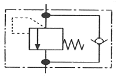
- 감압 밸브 : 실린더 전진 시 압력 제어
- 릴리프 밸브 : 회로의 압력을 일정하게 유지
- 일방향 유량제어 밸브 : 실린어 후진속도 제어
- 카운터 밸런스 밸브 : 실린더 자중에 의한 낙하 방지
(정답률: 48%)
72. 실제의 시간과 관계된 신호에 의하여 제어가 행해지는 제어계는?
- 논리 제어계
- 동기 제어계
- 비동기 제어계
- 시퀀스 제어계
(정답률: 58%)
73. 유체 비중량의 정의로 옳은 것은?
- 단위 체적당 유체가 갖는 무게
- 단위 체적이 같는 유체의 질량
- 단위 중량이 갖는 체적, 단위 질량당의 체적
- 물체의 밀도를 순수한 물의 밀도로 나눈 값
(정답률: 48%)
74. 방향 전환 밸브의 구조에 관한 설명이 옳지 않은 것은?
- 로크회로에는 스풀 형식보다는 포핏 형식을 사용하는 것이 장시간 확실한 로크를 할 수 있다.
- 스풀 형식은 각종 유압 흐름의 형식을 쉽게 설계할 수 있고, 각종 조작방식을 용이하게 적용할 수 있다.
- 포핏 형식은 밸브의 추력을 평형시키는 방법이 곤란하고 조작의 자동화가 어려우므로 고압용 유압 방향전환 밸브로서는 널리 사용되지 않는다.
- 로터리 형식은 일반적으로 회전축에 평형이 되는 방향으로 측압이 걸리고 또한, 로토리에 작은 압유통로를 뚫어야 하기 때문에 밸브 본체가 비교적 소형이 된다.
(정답률: 47%)
75. 그림과 같은 밸브의 B포트를 막았을 때와 같은 기능을 하는 밸브는?
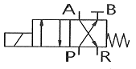
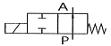
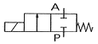
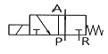
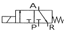
(정답률: 57%)
76. 다음 중 밸브 선정 시 직접적인 고려사항으로 가장 적절하지 않은 것은?
- 실린더의 속도
- 요구되는 스위칭 횟수
- 허용할 수 있는 압력 강하
- 실린더와 밸브 사이의 최소거리
(정답률: 55%)
77. 돌발적,만성적으로 발생하여 설비의 효율에 악영향을 미치는 6대 로스(loss)가 아닌 것은?
- 속도 로스
- 불량 로스
- 양품 로스
- 정지 로스
(정답률: 63%)
78. 일상생활이나 산업현장에서의 피드백 제어에 해당되는 작업은?
- 아파트 현관 램프가 일정시간 켜졋다가 저절로 꺼진다.
- 4/2-way 밸브를 조작하여 공기압 실린더로 목재를 클램핑한다.
- 유량조정밸브만을 사용하여 유압 모터의 축을 일정한 속도로 회전시킨다.
- 아크 용접 로봇이 AC 서보모터를 이용하여 속도, 위치 데이터를 측정하며 지정된 용접선을 따라 용접한다.
(정답률: 63%)
79. 압축공기 저장탱크의 구성요소가 아닌 것은?
- 배수기
- 압력계
- 유량계
- 압력 안전밸브
(정답률: 57%)
80. 베르누이 정리에 관한 관계식으로 옳은 것은? (단, V: 유속(m/s), g: 중력가속도(m/s2) γ: 유체의 비중량(N/m3), P: 압력(Pa), Z: 높이(m)이다.)
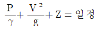
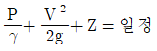
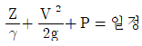
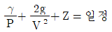
(정답률: 50%)